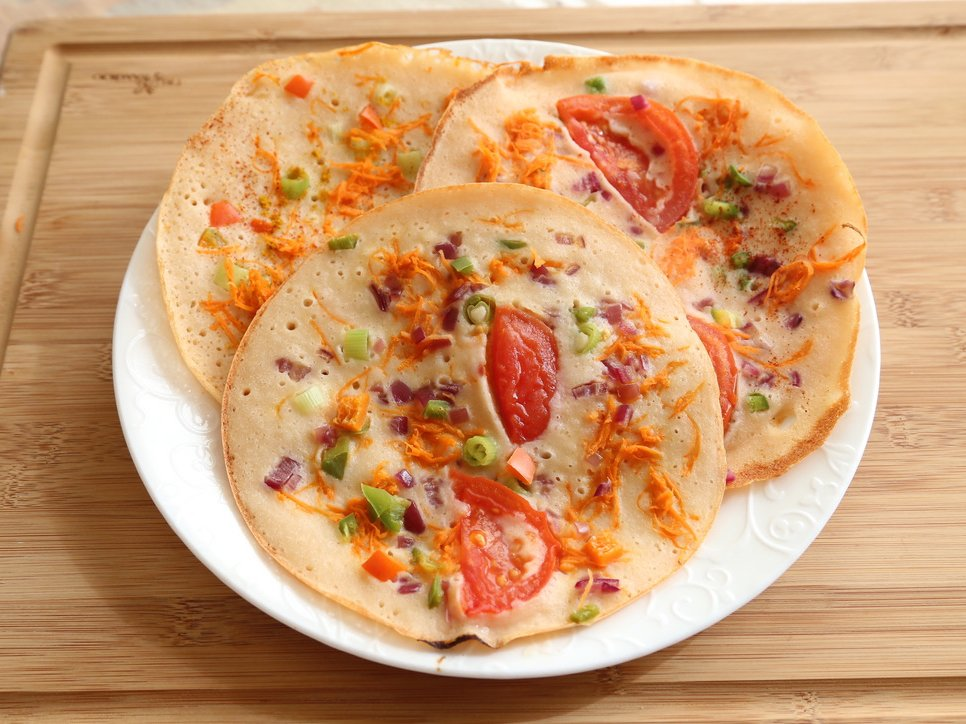

🥗 Uttapam Recipe

Ingredients
- 2 cups dosa/idli batter (fermented)
- 1 small onion (finely chopped)
- 1 tomato (finely chopped)
- 1 green chili (finely chopped)
- 1/4 cup capsicum (optional, finely chopped)
- Chopped coriander leaves
- Salt to taste
- Oil or ghee for cooking
Instructions
- Heat a tawa or non-stick pan and grease it lightly with oil or ghee.
- Pour a ladleful of dosa batter and spread it slightly to form a thick pancake.
- Sprinkle chopped onions, tomatoes, green chilies, capsicum, and coriander on top.
- Press lightly with a spatula so toppings stick to the batter.
- Drizzle oil or ghee around the edges.
- Cook on medium flame till the base is golden brown, then flip and cook the other side lightly.
- Serve hot with coconut chutney or sambar.
Serve With
- Coconut chutney
- Tomato chutney
- Sambar
- Mint chutney
🍳 Tip: For a crisp bottom and soft top, cook on medium-low heat and avoid covering with a lid.